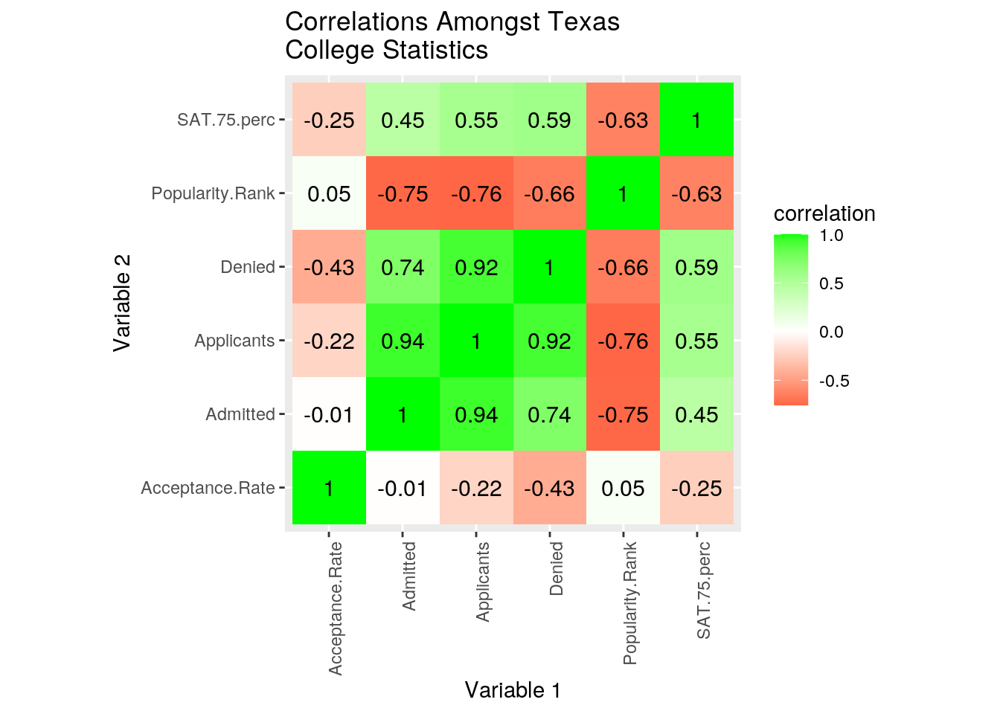
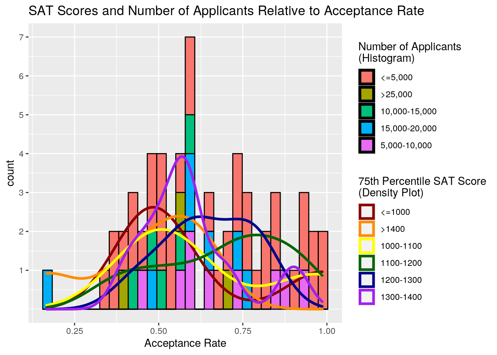
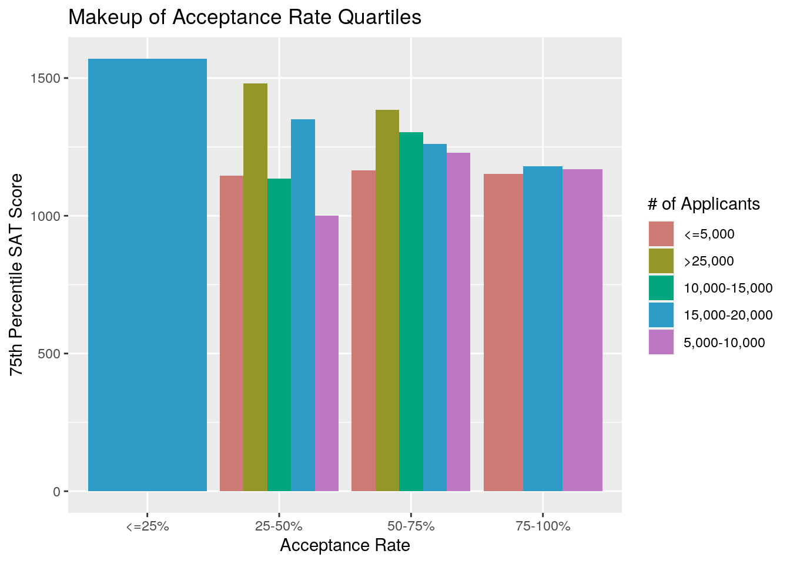
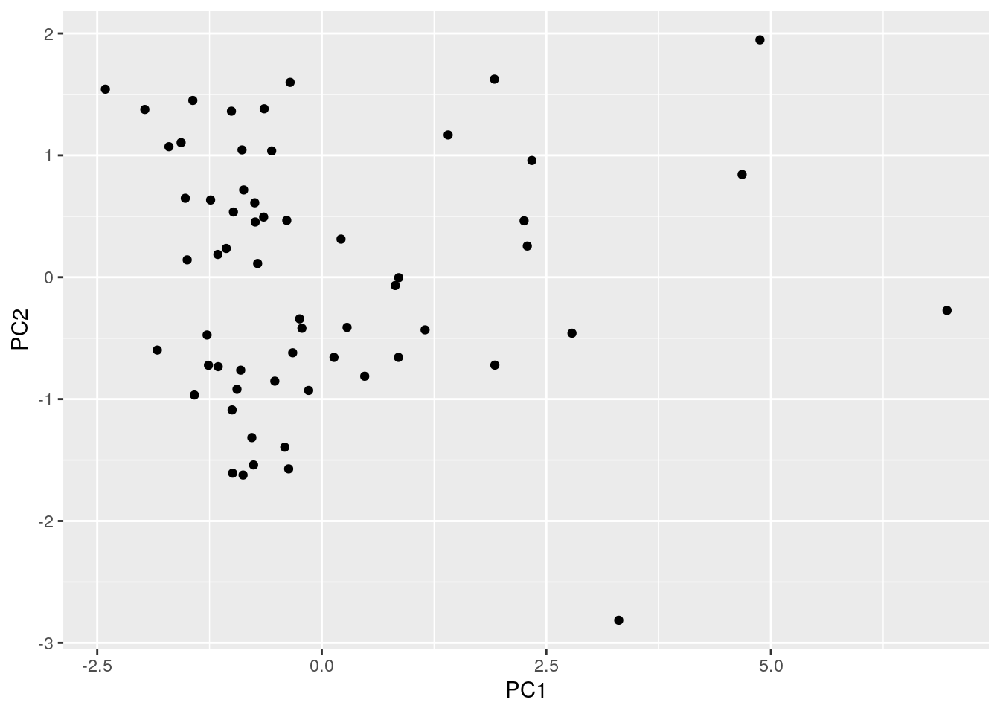

I have chosen two datasets that consist of academic information regarding most of the universities in Texas for 2021. I obtained the “Texas_College_Acceptance_Rates_2021” dataset from acceptancerates.com, and I obtained the “Texas_College_Rank_SAT_2021” from USNews.com.
The “Texas_College_Acceptance_Rates_2021” dataset includes the variables ‘School’, ‘Applicants’, ‘Admitted’, and ‘Acceptance.Rate’.
The The “Texas_College_Rank_SAT_2021” dataset includes the variables ‘School’, Popularity.Rank’, and SAT.75.Perc’. ‘Popularity.Rank’ is simply a ranking based on certain criteria such as accreditation and degrees offered. ‘SAT.75.Perc’ is the 75th percentile SAT score for matriculants of each college.
I chose these data because I thought it would intersting to study the relationship between variables such as SAT scores and acceptance rates. I would expect that a university with a lower acceptance rate would also have higher 75th percentile SAT scores. Alternatively, I expect that colleges with a better popularity ranking will have a higher number of applicants.
rates <- read.csv("Texas_College_Acceptance_Rates_2021.csv") %>% select(-X)
ranks <- read.csv("Texas_College_Rank_SAT_2021.csv")
stats <- inner_join(rates, ranks, by = "School")
glimpse(stats)## Rows: 60
## Columns: 6
## $ School <fct> Rice, Southwestern Assemblies of God University, Texa…
## $ Applicants <int> 15415, 2057, 830, 2091, 38161, 1810, 2394, 2631, 1074…
## $ Admitted <int> 2581, 717, 309, 786, 15335, 736, 998, 1113, 4548, 438…
## $ Acceptance.Rate <dbl> 0.167, 0.349, 0.372, 0.376, 0.402, 0.407, 0.417, 0.42…
## $ Popularity.Rank <int> 4, 59, 65, 45, 1, 61, 50, 39, 37, 28, 58, 46, 14, 30,…
## $ SAT.75.perc <int> 1570, 1103, 1150, 1150, 1480, 1310, 1140, 1250, 1040,…Here I have simply combined my two datasets by their common variable “School” using the ‘inner_join()’ function. In doing this, I have automatically excluded any colleges that were not present in both datasets. I did this so there would be no randomly absent observations. Northwood University, Sul Ross State University, UT-Pan American, Our Lady of the Lake, Remington College, UTEP, Criswell, A&M Texarkana, King’s University, UT RGV, Houston Clear Lake, and UNT were all dropped from the resulting dataset. This shouldn’t cause any issues except that it could slightly skew summary statistics and correlations determined later.
For some reason, there was an empty column entitled “X” when I imported the acceptance rate dataset, so I dropped this column using the ‘select()’ function.
all_stats <- stats %>% mutate(Denied = Applicants - Admitted)
top_tier <- all_stats %>% filter(Acceptance.Rate < 0.6 & Popularity.Rank <= 25 & SAT.75.perc >= 1250) %>% arrange(desc(SAT.75.perc))
glimpse(top_tier)## Rows: 8
## Columns: 7
## $ School <fct> Rice, The University of Texas at Austin (UT Austin), …
## $ Applicants <int> 15415, 38161, 12080, 8750, 29249, 18551, 17407, 18299
## $ Admitted <int> 2581, 15335, 6125, 5125, 16809, 8791, 10167, 10922
## $ Acceptance.Rate <dbl> 0.167, 0.402, 0.507, 0.586, 0.575, 0.474, 0.584, 0.597
## $ Popularity.Rank <int> 4, 1, 7, 9, 6, 14, 3, 5
## $ SAT.75.perc <int> 1570, 1480, 1480, 1460, 1380, 1350, 1310, 1250
## $ Denied <int> 12834, 22826, 5955, 3625, 12440, 9760, 7240, 7377top_tier %>% summarize(mean(SAT.75.perc), median(SAT.75.perc), sd(SAT.75.perc), mean(Acceptance.Rate), median(SAT.75.perc), sd(Acceptance.Rate))## mean(SAT.75.perc) median(SAT.75.perc) sd(SAT.75.perc) mean(Acceptance.Rate)
## 1 1410 1420 105.5597 0.4865
## sd(Acceptance.Rate)
## 1 0.1460166all_stats %>% group_by(Acceptance.Rate < 0.5, Acceptance.Rate >= 0.5) %>% summarise(mean(SAT.75.perc), min(SAT.75.perc), max(SAT.75.perc))## `summarise()` regrouping output by 'Acceptance.Rate < 0.5' (override with `.groups` argument)## # A tibble: 2 x 5
## # Groups: Acceptance.Rate < 0.5 [2]
## `Acceptance.Rat… `Acceptance.Rat… `mean(SAT.75.pe… `min(SAT.75.per…
## <lgl> <lgl> <dbl> <int>
## 1 FALSE TRUE 1196. 910
## 2 TRUE FALSE 1199. 980
## # … with 1 more variable: `max(SAT.75.perc)` <int>applicant_info <- all_stats %>% select(School, SAT.75.perc, Acceptance.Rate)
head(applicant_info)## School SAT.75.perc Acceptance.Rate
## 1 Rice 1570 0.167
## 2 Southwestern Assemblies of God University 1103 0.349
## 3 Texas A & M University-Texarkana (A&M-Texarkana) 1150 0.372
## 4 Hardin-Simmons University (HSU) 1150 0.376
## 5 The University of Texas at Austin (UT Austin) 1480 0.402
## 6 LeTourneau University (LETU) 1310 0.407fake.tidy <- all_stats %>% pivot_longer(!School, names_to = "stat", values_to = "count")
fake.tidy## # A tibble: 360 x 3
## School stat count
## <fct> <chr> <dbl>
## 1 Rice Applicants 15415
## 2 Rice Admitted 2581
## 3 Rice Acceptance.Rate 0.167
## 4 Rice Popularity.Rank 4
## 5 Rice SAT.75.perc 1570
## 6 Rice Denied 12834
## 7 Southwestern Assemblies of God University Applicants 2057
## 8 Southwestern Assemblies of God University Admitted 717
## 9 Southwestern Assemblies of God University Acceptance.Rate 0.349
## 10 Southwestern Assemblies of God University Popularity.Rank 59
## # … with 350 more rowsfake.tidy %>% pivot_wider(names_from = stat, values_from = count)## # A tibble: 60 x 7
## School Applicants Admitted Acceptance.Rate Popularity.Rank SAT.75.perc Denied
## <fct> <dbl> <dbl> <dbl> <dbl> <dbl> <dbl>
## 1 Rice 15415 2581 0.167 4 1570 12834
## 2 South… 2057 717 0.349 59 1103 1340
## 3 Texas… 830 309 0.372 65 1150 521
## 4 Hardi… 2091 786 0.376 45 1150 1305
## 5 The U… 38161 15335 0.402 1 1480 22826
## 6 LeTou… 1810 736 0.407 61 1310 1074
## 7 Texas… 2394 998 0.417 50 1140 1396
## 8 Dalla… 2631 1113 0.423 39 1250 1518
## 9 Prair… 10747 4548 0.423 37 1040 6199
## 10 Texas… 9746 4389 0.45 28 1000 5357
## # … with 50 more rowsI chose to use the ‘mutate()’ function first. Specifically, by subtracting the ‘Admitted’ column from the ‘Applicants’ column, I created the ‘Denied’ column. Next, I used the ‘filter()’ and ‘arrange()’ functions to create a new dataset called “top_tier”. I filtered through only the schools with an acceptance rate less than 0.6, a popularity ranking of 25 or better, and a matriculant 75th percentile SAT score of 1250 or greater. I then used the ‘summarise()’ function to create a table containing the mean, median, and standard deviation of the 75th percentile SAT scores and acceptance rates for these top tier colleges.
I did not have any categorical variables in my dataset, so I split the schools into two groups: those with an acceptance rate of 0.5 or more and those with an acceptance rate less than 0.5. I then funneled this into another ‘summarise()’ function to find the mean, min, and max for both of these groups. I then used the ‘select()’ function to create a new dataset with only the ‘School’, ‘SAT.75.perc’, and ‘Acceptance.Rate’ variables from the original dataset.
Lastly, I used the ‘pivot_longer()’ function to reduce the number of columns and increase the number of rows in my data (untidy). I put all column names (except ‘School’) under a newly created ‘stat’ column, and I put all values’ under a newly created ‘count’ column. To retidy my data, I simply reversed this using the ‘pivot_wider()’ function, leaving my dataset exactly as it was before.
cormat <- all_stats %>% select_if(is.numeric) %>% cor(use="pair")
tidycor <- cormat %>% as.data.frame %>% rownames_to_column("var1") %>% pivot_longer(-1,names_to="var2",values_to="correlation")
tidycor %>% ggplot(aes(var1,var2,fill=correlation))+
geom_tile() +
scale_fill_gradient2(low="red",mid="white",high="green")+
geom_text(aes(label=round(correlation,2)),color = "black", size = 4)+
theme(axis.text.x = element_text(angle = 90, hjust=1))+
coord_fixed()+
ggtitle("Correlations Amongst Texas\nCollege Statistics")+
labs(y= "Variable 2", x = "Variable 1")
This correlation heat map shows the relationships between all five of the numeric variables in my “all_stats” dataset. It seems that the acceptance rates of schools have weak or no correlations with all of the other variables. However, the number of students admitted has a very strong positive correlation with the number of applicants and with the number of denied students (of course). There is also a fairly strong negative correlation between admitted students and a school’s popularity rank. The number of applicants and denied students is very positively correlated, while the number of applicants and a school’s popularity rank is negatively related. Finally, the number of denied students is negatively correlated with a school’s popularity rank, and 75th percentile SAT score is also negatively correlated with popularity rank.
stat_divisions <- all_stats %>% mutate(SAT_75th_percentile = ifelse(SAT.75.perc<=1000, "<=1000", ifelse(SAT.75.perc>1000&SAT.75.perc<=1100, "1000-1100", ifelse(SAT.75.perc>1100 & SAT.75.perc<=1200, "1100-1200", ifelse(SAT.75.perc>1200 & SAT.75.perc<=1300, "1200-1300", ifelse(SAT.75.perc>1300 & SAT.75.perc<=1400, "1300-1400", ifelse(SAT.75.perc>1400, ">1400", "0")))))))
stat_divisions <- stat_divisions %>% mutate(Acceptance_Rate = ifelse(Acceptance.Rate<=0.25, "<=25%", ifelse(Acceptance.Rate>0.25&Acceptance.Rate<=0.5, "25-50%", ifelse(Acceptance.Rate>0.5 & Acceptance.Rate<=0.75, "50-75%", ifelse(Acceptance.Rate>0.75, "75-100%", "0")))))
stat_divisions <- stat_divisions %>% mutate(Num.Applicants = ifelse(Applicants<=5000, "<=5,000", ifelse(Applicants>5000&Applicants<=10000, "5,000-10,000", ifelse(Applicants>10000 & Applicants<=15000, "10,000-15,000", ifelse(Applicants>15000 & Applicants<=20000, "15,000-20,000", ifelse(Applicants>20000 & Applicants<=25000, "20,000-25,000", ifelse(Applicants>25000, ">25,000", "0")))))))
stat_divisions %>% ggplot(aes(Acceptance.Rate)) + geom_histogram(aes(fill = Num.Applicants), color = "black") +
geom_density(aes(color = SAT_75th_percentile), size = 1.25)+
ggtitle("SAT Scores and Number of Applicants Relative to Acceptance Rate")+
labs(x = "Acceptance Rate", fill = "Number of Applicants\n(Histogram)", color = "75th Percentile SAT Score\n(Density Plot)")+
scale_color_manual(values = c("dark red", "dark orange", "yellow", "dark green", "dark blue", "purple"))+
scale_y_continuous(breaks = c(1, 2, 3, 4, 5, 6, 7))## `stat_bin()` using `bins = 30`. Pick better value with `binwidth`.
First, since I didn’t have any categorical variables in my dataset, I had to create a few from my numerical variables. Specifically, I created ranges for each variable to be grouped into.
I used the acceptance rate, number of applicants, and SAT score variables for this plot. With this graph, you can compare these variables with each other. For example, you can see that schools with an SAT 75th percentile score of 1300-1400 tend to have an acceptance rate of around 55%. Additionally, you can see that there seems to be no relationship between the number of applicants a school considers and the school’s acceptance rate since each color of the histogram aesthetic is scattered throughout the plot.
ggplot(stat_divisions, aes(x = Acceptance_Rate, y = SAT.75.perc, fill=Num.Applicants))+
geom_bar(stat="summary",fun=mean, position = "dodge")+
ggtitle("Makeup of Acceptance Rate Quartiles")+
labs(y= "75th Percentile SAT Score", x = "Acceptance Rate", fill = "# of Applicants")+
scale_fill_manual(values = c("red", "orange", "yellow", "green", "blue", "purple"))+
scale_fill_hue(l=60, c=60)## Scale for 'fill' is already present. Adding another scale for 'fill', which
## will replace the existing scale.
Since I really don’t have many variables to play with, I used the same three variables here. However, this time I presented the data such a way that shows the makeup of each quartile of acceptance rates. Additionally, this plot allows you to see which quartiles coincide with which 75th percentile SAT scores. This graph illustrates that all schools with an acceptance rate of 25% or less have between 15,000 and 20,000 applicants. It can also be concluded that the Texas schools that have greater than 25,000 applicants and an acceptance rate of 25-50% have an average 75th percentile SAT score of nearly 1500. Many other conclusions such as this can be reached, but a more general conclusion is that there seems to be no relationship between a school’s acceptance rate and its matriculant SAT scores.
some_stats <- all_stats %>% select(-Popularity.Rank)
num_stats <- some_stats %>% select_if(is.numeric) %>% scale
rownames(num_stats)<- all_stats$School
stats_pca <- princomp(num_stats)
names(stats_pca)## [1] "sdev" "loadings" "center" "scale" "n.obs" "scores" "call"summary(stats_pca, loadings=T)## Importance of components:
## Comp.1 Comp.2 Comp.3 Comp.4 Comp.5
## Standard deviation 1.7814682 1.0134734 0.7570110 0.37794665 3.235309e-08
## Proportion of Variance 0.6454839 0.2089074 0.1165557 0.02905295 2.128927e-16
## Cumulative Proportion 0.6454839 0.8543913 0.9709471 1.00000000 1.000000e+00
##
## Loadings:
## Comp.1 Comp.2 Comp.3 Comp.4 Comp.5
## Applicants 0.540 0.176 0.206 0.796
## Admitted 0.483 0.401 0.217 -0.594 -0.454
## Acceptance.Rate -0.201 0.882 -0.266 0.334
## SAT.75.perc 0.395 -0.142 -0.902 -0.104
## Denied 0.527 -0.105 0.164 0.724 -0.400statsdf <- data.frame(PC1=stats_pca$scores[, 1],PC2=stats_pca$scores[, 2])
ggplot(statsdf, aes(PC1, PC2)) + geom_point()
School <- all_stats$School
#highest PC1
stats_pca$scores %>% as.data.frame %>% cbind(School, .) %>% top_n(3, Comp.1) ## School
## The University of Texas at Austin (UT Austin) The University of Texas at Austin (UT Austin)
## Baylor University Baylor University
## Texas A & M University-College Station (Texas A&M) Texas A & M University-College Station (Texas A&M)
## Comp.1 Comp.2
## The University of Texas at Austin (UT Austin) 6.961405 -0.2721173
## Baylor University 4.679658 0.8431971
## Texas A & M University-College Station (Texas A&M) 4.878344 1.9475911
## Comp.3 Comp.4
## The University of Texas at Austin (UT Austin) 0.5306557 1.5910235
## Baylor University 0.3891064 -0.1057195
## Texas A & M University-College Station (Texas A&M) 0.3270243 -1.0528392
## Comp.5
## The University of Texas at Austin (UT Austin) -2.886580e-15
## Baylor University -7.771561e-16
## Texas A & M University-College Station (Texas A&M) -3.330669e-16#lowest PC1
stats_pca$scores %>% as.data.frame %>% cbind(School, .) %>% top_n(3, wt=desc(Comp.1))## School Comp.1
## Dallas Christian College Dallas Christian College -1.831005
## Paul Quinn College Paul Quinn College -2.409404
## Wayland Baptist University (WBU) Wayland Baptist University (WBU) -1.970098
## Comp.2 Comp.3 Comp.4
## Dallas Christian College -0.5973586 1.17114932 0.02785875
## Paul Quinn College 1.5433409 1.01619237 0.76265139
## Wayland Baptist University (WBU) 1.3767047 -0.01054201 0.65129336
## Comp.5
## Dallas Christian College 2.220446e-16
## Paul Quinn College -3.885781e-16
## Wayland Baptist University (WBU) -2.775558e-16#highest PC2
stats_pca$scores %>% as.data.frame %>% cbind(School, .) %>% top_n(3, wt=Comp.2) ## School
## Texas A & M University-College Station (Texas A&M) Texas A & M University-College Station (Texas A&M)
## Texas State University-San Marcos (Texas State) Texas State University-San Marcos (Texas State)
## Texas A & M University-Corpus Christi Texas A & M University-Corpus Christi
## Comp.1 Comp.2
## Texas A & M University-College Station (Texas A&M) 4.878344 1.947591
## Texas State University-San Marcos (Texas State) 1.922365 1.625379
## Texas A & M University-Corpus Christi -0.352617 1.599295
## Comp.3 Comp.4
## Texas A & M University-College Station (Texas A&M) 0.3270243 -1.0528392
## Texas State University-San Marcos (Texas State) 0.8062071 -0.7197841
## Texas A & M University-Corpus Christi -0.4106960 -0.2258224
## Comp.5
## Texas A & M University-College Station (Texas A&M) -3.330669e-16
## Texas State University-San Marcos (Texas State) 2.220446e-16
## Texas A & M University-Corpus Christi 3.330669e-16#lowest PC2
stats_pca$scores %>% as.data.frame %>% cbind(School, .) %>% top_n(3, wt=desc(Comp.2)) ## School
## Rice Rice
## Southwestern Assemblies of God University Southwestern Assemblies of God University
## Texas A & M University-Texarkana (A&M-Texarkana) Texas A & M University-Texarkana (A&M-Texarkana)
## Comp.1 Comp.2
## Rice 3.3059562 -2.814264
## Southwestern Assemblies of God University -0.8762908 -1.622711
## Texas A & M University-Texarkana (A&M-Texarkana) -0.9925787 -1.607443
## Comp.3 Comp.4
## Rice -1.3447551 0.8925568
## Southwestern Assemblies of God University 0.6876185 -0.2817729
## Texas A & M University-Texarkana (A&M-Texarkana) 0.2508454 -0.3758981
## Comp.5
## Rice -1.221245e-15
## Southwestern Assemblies of God University 2.498002e-16
## Texas A & M University-Texarkana (A&M-Texarkana) 4.996004e-16all_stats %>% filter(School%in%c("The University of Texas at Austin (UT Austin)", "Baylor University", "Texas A & M University-College Station (Texas A&M)"))## School Applicants Admitted
## 1 The University of Texas at Austin (UT Austin) 38161 15335
## 2 Baylor University 29249 16809
## 3 Texas A & M University-College Station (Texas A&M) 31387 21803
## Acceptance.Rate Popularity.Rank SAT.75.perc Denied
## 1 0.402 1 1480 22826
## 2 0.575 6 1380 12440
## 3 0.695 2 1390 9584all_stats %>% filter(School%in%c("Dallas Christian College", "Paul Quinn College", "Wayland Baptist University (WBU)"))## School Applicants Admitted Acceptance.Rate
## 1 Dallas Christian College 223 123 0.552
## 2 Paul Quinn College 632 623 0.986
## 3 Wayland Baptist University (WBU) 581 573 0.986
## Popularity.Rank SAT.75.perc Denied
## 1 64 972 100
## 2 60 910 9
## 3 51 1060 8all_stats %>% filter(School%in%c("Texas State University-San Marcos (Texas State)", "Texas A & M University-College Station (Texas A&M)", "Texas A & M University-Corpus Christi"))## School Applicants Admitted
## 1 Texas A & M University-College Station (Texas A&M) 31387 21803
## 2 Texas State University-San Marcos (Texas State) 18939 14219
## 3 Texas A & M University-Corpus Christi 7091 6565
## Acceptance.Rate Popularity.Rank SAT.75.perc Denied
## 1 0.695 2 1390 9584
## 2 0.751 12 1180 4720
## 3 0.926 19 1200 526all_stats %>% filter(School%in%c("Rice", "Southwestern Assemblies of God University", "Texas A & M University-Texarkana (A&M-Texarkana)"))## School Applicants Admitted
## 1 Rice 15415 2581
## 2 Southwestern Assemblies of God University 2057 717
## 3 Texas A & M University-Texarkana (A&M-Texarkana) 830 309
## Acceptance.Rate Popularity.Rank SAT.75.perc Denied
## 1 0.167 4 1570 12834
## 2 0.349 59 1103 1340
## 3 0.372 65 1150 521Here, I grabbed all numeric data from my dataset except for ‘Popularity.Rank’. Then I scaled data and ran ‘princomp()’ on the scaled data. Next, I chose to include the first PC1 and PC2 in my analysis since these components account for over 85% of the total variance. It seems that schools high in PC1 tend be high in all variables except acceptance rate which they are lower in. Conversely, schools high in PC2 tend to have significantly higher acceptance rates. They also admit more students, but they have lower matriculant SAT scores and deny fewer students.
After creating a scatterplot to visualize these components, it is apparent that there are a few outliers. I identified the the schools with the highest and lowest scores for PC1 and PC2, and then I printed out their stats seperately. As an example, UT Austin, Baylor, and A&M are the three schools that are the highest in PC1.